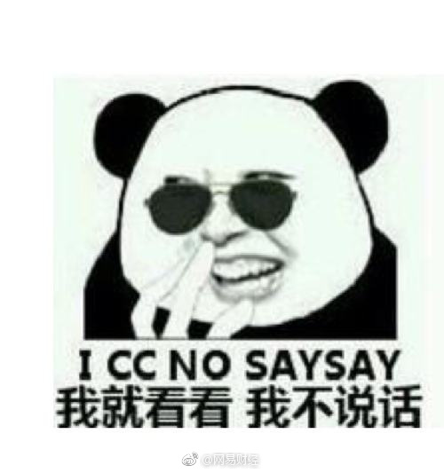
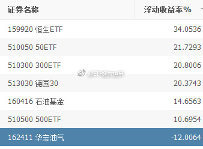

哈哈哈哈……你的钱都被谁赚走了系列。@网易财经:#网易新闻# 【"国家队"二季度以来浮盈784亿 12只股成产蛋金鸡】编者按：二季度以来，A股市场先抑后扬，整体宽幅震荡，在二季度接近尾声之际，以证金、汇金为代表的“国家队”持仓股表现和账面情况受到投资者的关注。《证券日报》市场研究中心根据同花顺数据统计发现，二季度以来，“国家队”持仓的1122只个股为其实现账面浮盈784亿元，其中，12只重仓股成为其获利的重要法宝。今日本专题从“国家队”持仓股账面浮盈情况、中报预告、资金流向、机构观点等角度挖掘其中潜力股的投资价值，供投资者参考。"国家队"二季度以来浮盈784亿 12只股成产蛋金鸡
关于补仓，再说两条应该对很多朋友有用的吧。第一个是买入品种浮亏，补仓区间不要太小。尤其是重仓补，不要跌个百分之几就补，最后会很麻烦。你不差那几个点的成本，如果真能涨起来，少赚不了多少。要补就把区间拉大，能真的有效降低成本，还安全。对于一些不能确定估值的，或者个股，我自己的补仓区间是30%、60%、90%。也就是跌到原价70%、40%、10%的时候才会补。第二个，根据资产配置的原则，我自己在单个品种上的仓位不会超过30%。一个经验。
不停的有朋友问我，加不加油气加不加油气。我以为跌了多少呢，打开计划帐户一看……这张图是我自己计划场内买入的部分。油气这不刚12%吗，这点就沉不住气了？场内场外加起来买了快20个品种了，只有一个仓位0.6%的才跌了12%有什么好怕的啊。别催我，也别问。我有自己的节奏。 
特别不理解的是：某股票去年底22元。最高涨到33。一个大利空跌到31，纷纷去抢：“挖坑了快抢啊。大好的投资机会”。过去几个月22-31之间比现在便宜多了你怎么不去买呢？因为到过33，所以31就是特别有价值了？